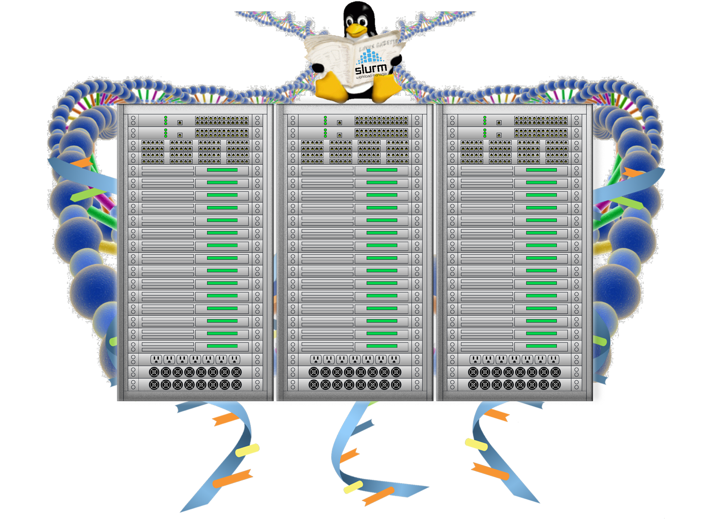

{kind=link}
Introduction to Bash Scripting and HPC Scheduler¶
{kind=link}

Prerequisites
- Familiarity with shell commands, environment variables and
forloops (completed Introduction to Shell workshop or have equivalent experience) - Ability to use a terminal based text editor such as
nano- This is not much of an issue as we are using JupyterHub which has a more friendlier text editor.
- Intermediate level knowledge on Molecular Biology and Genetics
Recommended but not required
- Attend Genomics Data Carpentry and RNA-Seq Data Analysis workshops
Some of the things we won't cover in this workshop
- Domain specific concepts in
- Genetics, Genomics and DNA Sequencing
- Variant Calling (covered in Genomics Data Carpentry Workshop)
- RNA sequencing and data analysis (covered in RNA-Seq Data Analysis Workshop)
Setup
Workshop material is designed to run on REANNZ HPC. You do not need to do anything in advance.
Content
| Lesson | Overview |
|---|---|
| Background | Objective of this workshop |
| 1. Designing a Variant Calling Workflow | Develop and test the steps involved in calling variants |
| 2. Automating a Variant Calling Workflow | Compile a script based on the above steps |
| 3. RNA-Seq Mapping And Count Data Workflow | Develop, test & compile a script for mapping reads and counting transcripts in a RNA-Seq data analysis pipeline |
| 4. Introduction to HPC | Introduction to High Performance Computing |
| 5. Working with Job Scheduler | Introduction to HPC Job Schedulers, Slurm Scheduler & life cycle of a Slurm job, Assessing resource utilisation and profiling |
| 6. Supplementary #1 | |
| 7. Supplementary #2 | |
| 8. Supplementary #3 |